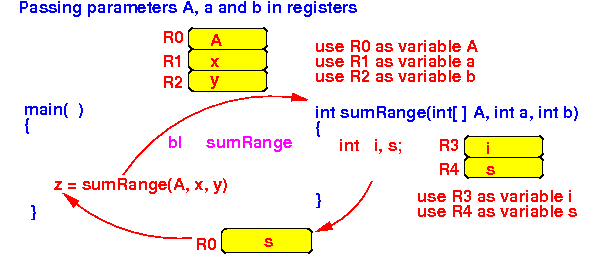
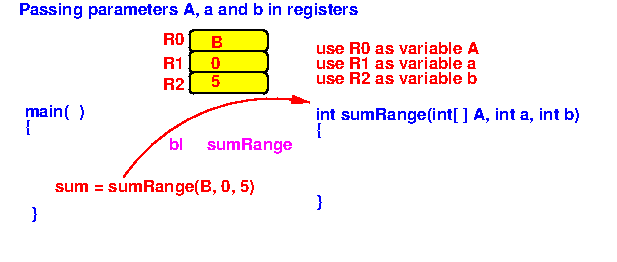
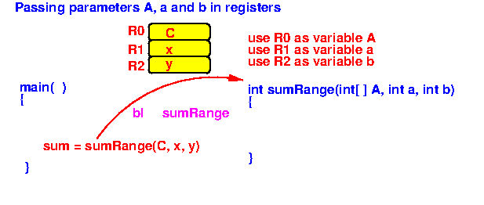
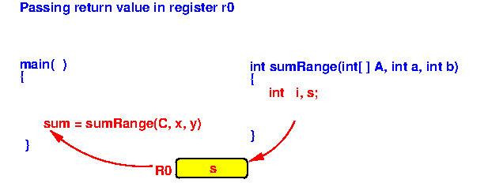
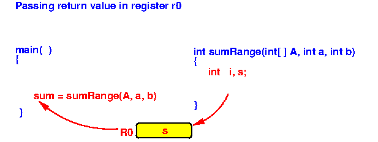

- Pre-requisite for
using a register as storage for
a local variable:
- The register that you use as storage for
a local variable
must be
be free
(= not in used, i.e.,
does not contain a value
needed by some later computation)
I.e.:
- If the method has reserved some register to store a parameter, the method cannot use it to store a local variable !!!
- The current function
must be
a leaf function
(Otherwise, the current function can call some other function and that function may use some registers that are in used and destroy the values in the registers)
- The register that you use as storage for
a local variable
must be
be free
(= not in used, i.e.,
does not contain a value
needed by some later computation)
- What happens when you use
a register as
storage for a
local variable:
- The method will
reserve the
register exclusive
to store the value of the
local variable
- The method
must
not allow
other methods
to use its reserved register(s)
(This usually means that the method can not call other methods because the other method will assume that all registers are unused and may destroy the values in some reserved registers.
That's why the method must be a leaf method !)

- The method will
reserve the
register exclusive
to store the value of the
local variable
- Consider the following
function invocation:
/* ------------------------------------------------------- sumRange(A,a,b): returns (A[a] + A[a+1] + ... + A[b-1]) ------------------------------------------------------- */ int sumRange(int[] A, int a, int b ) { int i, s; s = 0; for (i = a, i < b; i++) s = s + A[i]; return(s); } void main( ) { int[] B = {11,12,13,14,15,16,17,18,19,20}; int[] C = {1,2,3,4,5,6,7,8,9,10}; int x, y, sum; sum = sumRange(B, 0, 5); sum = sumRange(C, x, y); }Important note: how to pass an array to a function
- An array is
passed by
passing the
base address of
the array
Because if we know the base address of an array, we can find all elements in the array
- An array is
passed by
passing the
base address of
the array
- We will pass the parameters
and pass the return value as follows
using CPU registers:
 We assume that register r0 and r1 are "free" (unused) main passes the address of the array A in the register r0 main passes the parameter a in the register r1 main passes the parameter b in the register r2 sumRange passes the return value back in the register r0
We will use register r3 as local variable i We will use register r4 as local variable s (We must make sure the r3 and r4 is not use for any other purpose !!!)
- Using the
agreed registers,
the main( ) method
will pass the
parameters x and y
and
use the return value
as follows
(illustrtated in assembler code):
// Java statement: sum = sumRange(B, 0, 5): /* ------------------------------------------------- Pass parameter address of array B in reg r0 ------------------------------------------------- */ movw r0, #:lower16:B movt r0, #:upper16:B /* ------------------------------------------------- Pass 2nd parameter value 0 in reg r1 ------------------------------------------------- */ mov r1, #0 /* ------------------------------------------------- Pass 3nd parameter value 5 in reg r2 ------------------------------------------------- */ mov r2, #5 /* ----------------------------------------------------------------  call sum = sumRange(A, a, b) agreed inputs: r0 = addr of array A, r1 = a, r2 = b agreed return: r0 = return value ---------------------------------------------------------------- */ bl sumRange /* ----------------------------------------------------------------- Save return value (in r0) to variable sum (sum = sumRange(..)) ----------------------------------------------------------------- */ movw r1, #:lower16:sum // Do NOT use r0 !!! movt r1, #:upper16:sum // (Because r0 contains the return value) str r0, [r1] // This will store return value in sum // ----------------------------------------------------------------------- // Java statement: sum = sumRange(C, a, b): /* ------------------------------------------------- Pass parameter address of array C in reg r0 ------------------------------------------------- */ movw r0, #:lower16:C movt r0, #:upper16:C /* ------------------------------------------------- Pass 2nd parameter value a in reg r1 ------------------------------------------------- */ movw r1, #:lower16:a movt r1, #:upper16:a ldr r1, [r1] /* ------------------------------------------------- Pass 3nd parameter value b in reg r2 ------------------------------------------------- */ movw r2, #:lower16:b movt r2, #:upper16:b ldr r2, [r2] /* ----------------------------------------------------------------  call sum = sumRange(C, a, b) agreed inputs: r0 = addr of array C, r1 = a, r2 = b agreed return: r0 = return value ---------------------------------------------------------------- */ bl sumRange /* -----------------------------------------------------------------  Save return value (in r0) to variable sum (sum = sumRange(..)) ----------------------------------------------------------------- */ movw r1, #:lower16:sum // Do NOT use r0 !!! movt r1, #:upper16:sum // (Because r0 contains the return value) str r0, [r1] // This will store return value in sum
- Using the
agreed registers,
the sumRange( ) method
will get the
parameters a and b
and
pass the return value
as follows
(illustrtated in assembler code):
/* ---------------------------------------------------------------- Function sumRange(a,b): agreed inputs: r0 = A, r1 = a, r2 = b agreed return: r0 = return value Unused registers: r3, r4, r5, r6, r7, r8, r9, r10 Use these registers as local vars: *** r3 = i, r4 = s *** Body of sumRange(A,a,b): s = 0; for (i = a, i < b; i++) s = s + A[i]; return(s); ---------------------------------------------------------------- */ sumRange: // When sumRange begins, we will have: r0 = A, r1 = a, r2 = b
// s = 0;
mov r4, #0 // r4(=s) = 0
// i = a;
mov r3, r1 // r3(=i) = r1(=a)
while: // while (i < b)
cmp r3, r2 // r3 = i, r2 = b
bge whileEnd
// s = s + A[i];
///// get A[i] in r10
mov r5, r3 // r5 = i (because r3 = i)
add r5, r5, r5 // r5 = 2*i
add r5, r5, r5 // r5 = 4*i = offset used to access A[i]
ldr r10, [r0, r5] // r10 = A[i] (r0=A(base), r5=offset)
add r4, r4, r10 // r4(=s) = r4(=s) + r10(=A[i])
// i++
add r3, r3, #1 // r3(=i) = r3(=i) + 1
b while // End of while body - loop back !!
whileEnd:
// return(s)

mov r0, r4 // r0(return location) = r4(=s)
// The return value is now in r0
mov pc, lr // Return to the caller
- Example Program:
(Demo above code)

- Prog file: /home/cs255001/demo/asm/8-sub/reg-local1.s
How to run the program:
- To compile: as255 reg-local1
- To run: use EGTAPI